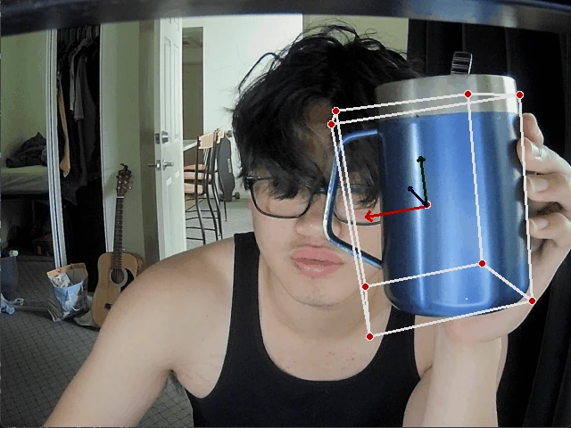
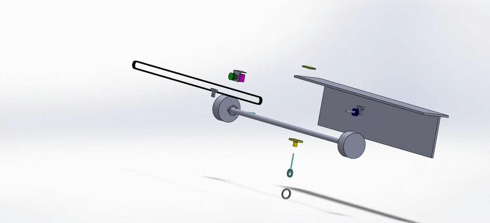
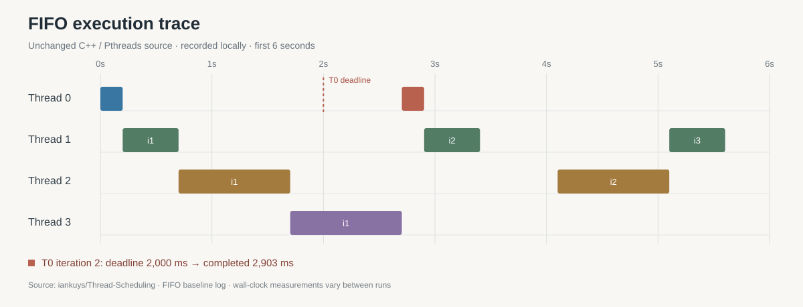
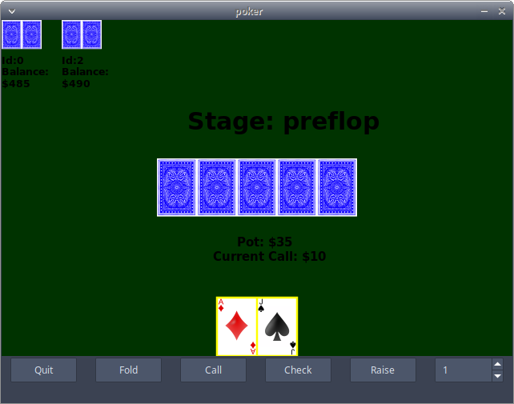

Real material we already have.
Original screenshots, recorded demos, archived plots, and a trace from the actual scheduler. These are source material for stronger covers.

Manual Segmentation
Frame from the repository’s editing demo.

Object Detection
Frame from the Objectron demo; video available.

Smart Curtains
Original mechanism CAD rendering; gesture demo also available.

Thread Scheduling
Drawn from real execution timestamps; one local run.

NLP & ML Experiments
Original repository plot; not a newly reproduced result.


Online Poker
Actual application screenshot.

Space Hell
Frame at 15 seconds in the original gameplay recording.
No generated imagery on this board. Six projects already have this material in the portfolio; the ML archive supplies another. The remaining 15 entries need new captures or individually designed technical figures. Product code has not changed.